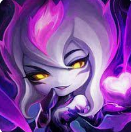
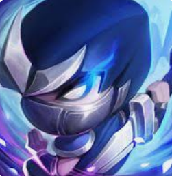
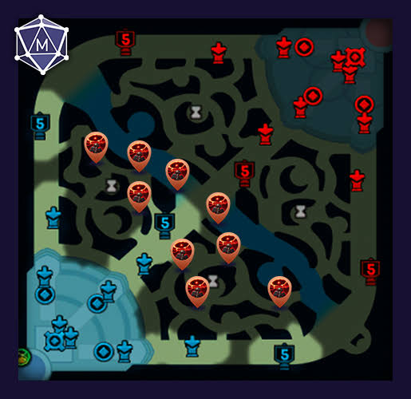

¿Por qué me gusta League of Legends?
Para mí, League of Legends es más que un simple juego de reflejos; es un verdadero reto mental. Me encanta porque requiere mucha estrategia, trabajo en equipo y adaptabilidad. Cada partida es diferente y te obliga a tomar decisiones críticas en segundos.
Disfruto analizar a fondo a los personajes que utilizo, entender sus fortalezas y pensar en cómo mis decisiones pueden ayudar a mi equipo a conseguir la victoria a través del control del mapa y los objetivos.
Mis Campeones y Tácticas Favoritas

Evelynn
Especialista en emboscadas con camuflaje pasivo y daño explosivo sobre objetivos prioritarios.

Shen
Presencia global gracias a su escudo teletransportador y control de masas defensivo.

Macrogame
La información es poder. Dominar el minimapa, rastrear al jungla rival y preparar la visión alrededor del río.